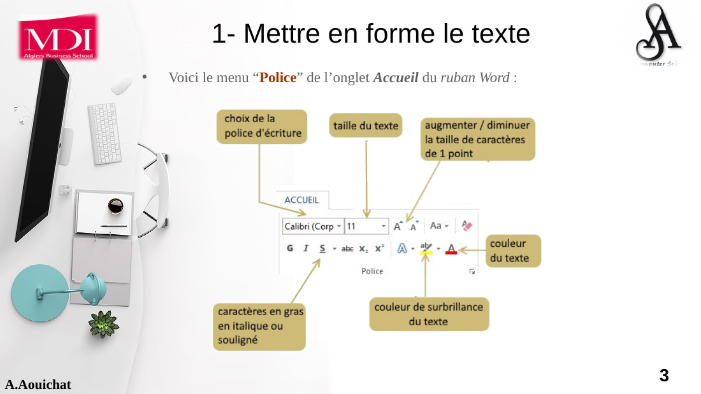
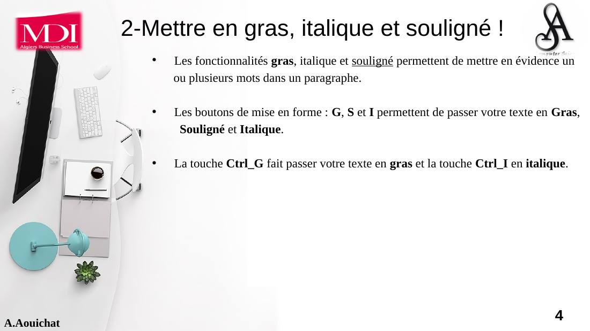
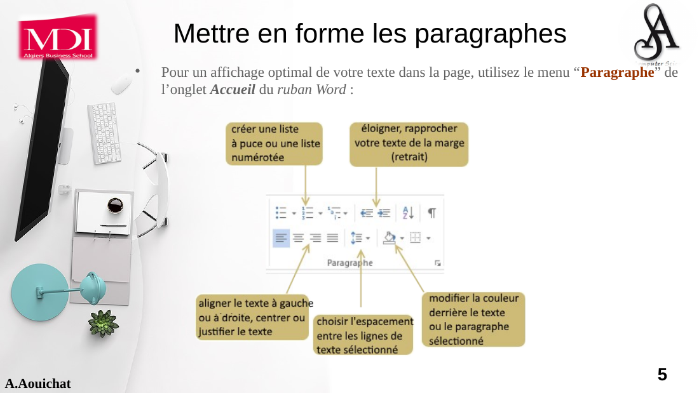
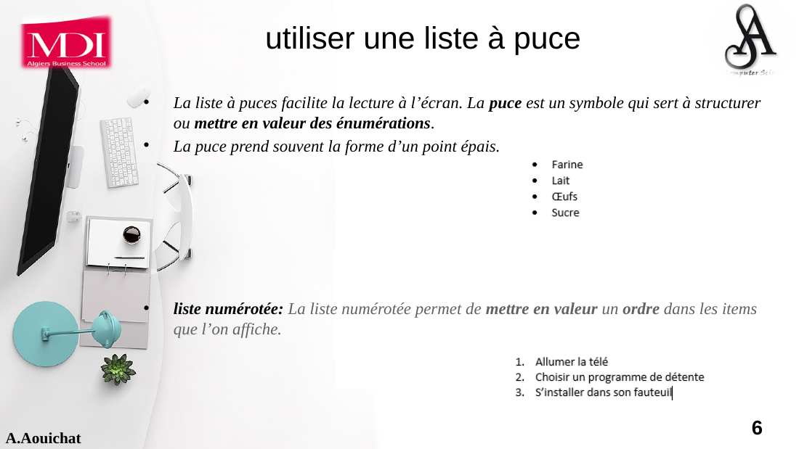
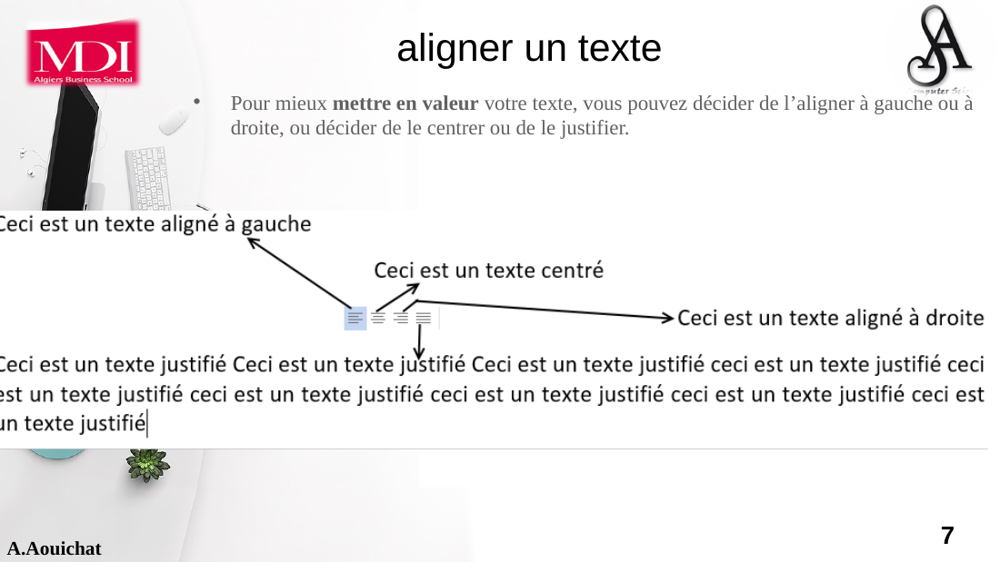

Accueil & mise en forme
Comprendre le ruban Accueil et maîtriser la mise en forme des caractères, paragraphes, listes, alignements, presse-papiers et styles.
L’onglet Accueil du ruban
L’onglet Accueil concentre les commandes utilisées le plus souvent pour modifier l’apparence et l’organisation du texte. Dans le support de cours, il est présenté en quatre groupes principaux : Presse-papiers, Police, Paragraphe et Style.

Repère Microsoft 365 actuel
L’apparence exacte varie selon Word pour Windows, Mac ou le web, mais la logique reste la même. Ce schéma moderne vous aide à retrouver les groupes essentiels sans dépendre d’une version précise.
Mettre en forme le texte avec le groupe Police
Le groupe Police permet de modifier l’apparence des caractères : famille de police, taille, augmentation/réduction de taille, gras, italique, souligné, surbrillance et couleur.
Procédure

Gras, italique et souligné
Le support utilise ces trois attributs pour mettre en évidence un ou plusieurs mots. Le gras renforce visuellement une information; l’italique apporte une emphase différente; le soulignement ajoute une ligne sous le texte.

Raccourcis du support : Ctrl+G pour le gras et Ctrl+I pour l’italique. Selon la langue et la plateforme de Word, certains raccourcis peuvent différer : vérifiez ceux affichés dans votre version.
Mettre en forme les paragraphes
La mise en forme d’un paragraphe agit sur un bloc de texte : alignement, retrait, espacement, listes et autres réglages. Elle est différente de la mise en forme des caractères, qui agit sur les lettres elles-mêmes.

Puces et numérotation
Une liste à puces structure une énumération sans imposer d’ordre. Une liste numérotée met au contraire en évidence une séquence, un classement ou des étapes.

Choisir le bon type
Puces : ingrédients, caractéristiques, idées indépendantes. Numéros : procédure, chronologie, priorité. Pour des documents plus complexes, Word permet aussi les listes à plusieurs niveaux.
Aligner un texte
Quatre alignements sont étudiés : gauche, centré, droite et justifié. Le choix dépend de la fonction du texte : un corps de lettre peut être justifié tandis qu’un titre peut être centré.

Copier, couper et coller
Le presse-papiers permet de déplacer ou dupliquer rapidement du contenu. Copier conserve l’original; Couper prépare son déplacement; Coller insère le contenu à l’emplacement du curseur.

Créer et modifier des styles
Un style regroupe des attributs de mise en forme réutilisables. Au lieu de reformater manuellement chaque titre, on applique un style commun. Cela améliore la cohérence et facilite ensuite les changements globaux.

Créer un style à partir d’un texte déjà formaté


Série N°01 — Mise en forme du texte
Les exercices ci-dessous reprennent les fichiers fournis et le modèle de résultat du PDF. Téléchargez le document de départ, réalisez la mise en forme dans Word puis comparez votre résultat au modèle.
Programme de spectacles
Titre de spectacle en Times New Roman 18 centré; compagnie en Cambria 12 bleu à gauche; durée en Times New Roman 12 italique, soulignée et ombrée; artiste en gras; date soulignée à droite; résumé en Arial 10 centré gras.
Voir le résultat attendu

Lettre de résiliation
Bloc envoyeur à gauche; destinataire à droite; courrier justifié avec retrait de paragraphe; identification centrée; signature mise en forme.
Voir le modèle

Bulletin d’inscription
Saisissez le texte fourni et reproduisez la mise en forme du modèle le plus fidèlement possible.
Voir le modèle
Bordures et trame
Titre : bordure double 2,6 pt et arrière-plan gris 5 %. Sous-titre : bordure 1 pt.
Voir le résultat attendu

Listes à deux niveaux
À partir du fichier Exo6, construisez quatre listes distinctes avec deux niveaux de numérotation et réglez les retraits selon le modèle.
Voir le résultat attendu

Lettre de motivation
Reproduisez sous Word la lettre de motivation présentée dans le support. Objectif : savoir structurer et mettre en forme une lettre professionnelle.
Voir le modèle

Activité de synthèse
Créez un document d’une page comprenant : un titre utilisant un style personnalisé, deux paragraphes avec des alignements différents, une liste à puces, une liste numérotée, au moins trois attributs de police, puis déplacez un passage avec Couper/Coller. L’objectif est de mobiliser l’ensemble des notions du module sans suivre un modèle.